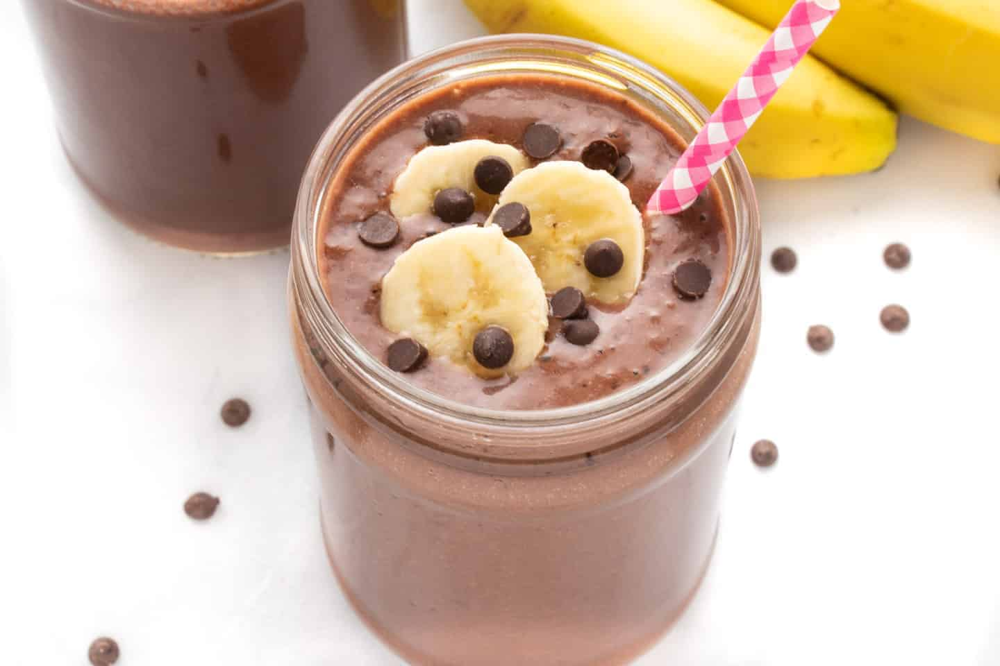

Chocolate Banana Smoothie

- 1 ripe banana, peeled and sliced
- 1 cup milk (any type)
- 2 tbsp cocoa powder
- 1 tbsp honey or maple syrup (optional)
- 1/2 cup plain yogurt
- Ice cubes (optional)
- Place all ingredients in a blender.
- Blend until smooth and creamy.
- Add ice cubes if desired for a colder smoothie.
- Pour into glasses and serve immediately.
Avocado Toast

- 2 slices whole grain bread, toasted
- 1 ripe avocado
- 1 tbsp lemon juice
- Salt and pepper to taste
- Red pepper flakes (optional)
- Fresh herbs (e.g., cilantro or parsley)
- Halve and pit the avocado, then scoop the flesh into a bowl.
- Add lemon juice, salt, and pepper to taste.
- Mash with a fork until smooth or chunky, as desired.
- Spread avocado mixture evenly onto toasted bread slices.
- Sprinkle with red pepper flakes and fresh herbs.
- Serve immediately.
Caprese Skewers
- Fresh mozzarella balls (bocconcini)
- Cherry tomatoes
- Fresh basil leaves
- Extra virgin olive oil
- Balsamic glaze or vinegar
- Salt and pepper to taste
-
Thread mozzarella balls, cherry tomatoes, and basil leaves onto
skewers.
- Drizzle with olive oil and balsamic glaze or vinegar.
- Season with salt and pepper to taste.
- Arrange on a serving platter and serve immediately.